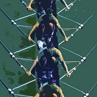
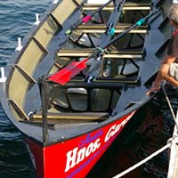

BANCO MÓVIL

Deporte olímpico de una gran tradición. Se practica principalmente sobre aguas tranquilas (ríos, canales, lagos, estanques,
puertos, embalses), tanto para la competición como para el ocio. Las regatas se hacen sobre una
distancia olímpica de 2.000 m, con distancias menores para ciertas categorías y modalidades no olímpicas.
También hay regatas de larga distancia y maratónicas. Se distingue entre pesos pesados y ligeros, así como tripulaciones
masculinas y femeninas. Las modalidades más populares son el ocho y el skiff (individual). Una característica principal del
remo de banco móvil es que los remos están apoyados en chumaceras colocadas fuera de borda sobre portantes.
Es por eso por lo que estas embarcaciones se llaman outriggers (inglés). También el remo no olímpico y de ocio
se realiza en outriggers pero para distinguirlas de las de alta competición se llaman yoletas. Las yolas,
que también son de banco móvil, son inriggers porque las chumaceras están colocadas sobre la borda en embarcaciones
muy anchas (1,10 m), y los remeros no están sentados en línea sino en alternancia a ambos lados de la embarcación
para adquirir la distancia necesaria hacia la chumacera. Hay un tipo de yoletas con el mismo ancho de 1,10 m pero con
portantes, para facilitar el uso de dos remos (scull). El uso de dos remos por remero se le conoce como scull.
Tanto estas como los eskifes son los más aptos para remar con ciertos oleajes en lagos y cercanías de las costas del mar.
Los remos del banco móvil tienen casi 3 m, en el caso de usar dos a la vez (scull), y casi 4 m en el caso de un remo por
remero (remo de punta). Algunas modalidades tienen un timonel sentado en popa o tumbado en proa. Las embarcaciones de equipo,
sin timonel, se timonean desde el pie de uno de los remeros. El timonel/remero con timón suele ser el patrón.
El remero sentado en popa (stroke), es el que marca el ritmo y la táctica en regatas.
Se llama el marca y a veces adquiere el papel de patrón.
BANCO FIJO
Es uno de los deportes más duros que existen, aunque no es olímpico, puede ser tanto amateur como profesional.
Los remos se sujetan en la regala de la embarcación sobre toletes y la unión entre estos y los remos es una especie de anillo
trenzado de cuerda natural o sintética, que se llama estrobo.
Banco Fijo del Cantábrico
Traineras
Competiciones entre embarcaciones de 13 remeros y un patrón típicas del norte de España. Las regatas se hacen en aguas de mar
con ciabogas. La gran mayoría sobre recorrido de 4 largos y tres ciabogas a realizar, sobre una distancia total de 3 millas
náuticas (5556 m). El decimotercer remero se sitúa en la proa (de ahí el nombre proel) y es el encargado de utilizar la pica o
espaldín, que no es más que un remo más corto que sirve, apoyado en el branque de la trainera para forzar el giro de ésta en
las ciabogas.
El peso mínimo de la embarcación sin remos ni accesorios en orden de competición será de 200 kg; mientras que la eslora deberá
tener una medida máxima de 12 metros.
Trainerillas
Embarcaciones de 6 remeros y un patrón. El proel lleva una pica, al igual que en la trainera, los remeros van uno detrás
de otro. El peso mínimo del barco son 100 kg, la eslora máxima de 9,5 metros y la distancia de la
regata es de 3500 metros. En estas regatas participan remeros de la categoría juvenil y sénior masculino y femenino.
Bateles
Embarcación de 4 remeros y un patrón o timonel. Los remeros manejan cada uno un remo, al igual que el patrón.
Se disponen uno detrás de otro; normalmente (aunque esto puede variar) cada remero rema por el costado contrario al del que
tiene delante, remando el boga (remero más próximo al patrón) por babor o por estribor. Otra forma de distribución de los
remeros es la llamada boga italiana en la que el boga y el proa reman por babor y el boga de estribor (remero que va detrás
del boga) y el tercer remero por estribor. Esta forma de estructurar el batel es usada normalmente cuando se utiliza una pica
de proa aunque no es usual llevarla. Es una embarcación de 7 metros de longitud como máximo y un peso mínimo de 70 kg.
Banco Fijo del Mediterráneo
Llaüt
El Llaüt es una embarcación formado por 8 remeros y un timonel que pesa alrededor de 150 kg. Las regatas de Llaüt Mediterráneo
podrán disputarse indistintamente en mar abierto, rías, ríos, lagos o embalses, siempre que las condiciones de ancho permitan
alinear, cuando menos, tres embarcaciones en una misma manga.
El Llaüt deriva del falucho, embarcación que se utiliza para la práctica deportiva en las regiones del levante español.
La tripulación se compone de ocho remeros y un timonel y su peso ronda los 370 kg.